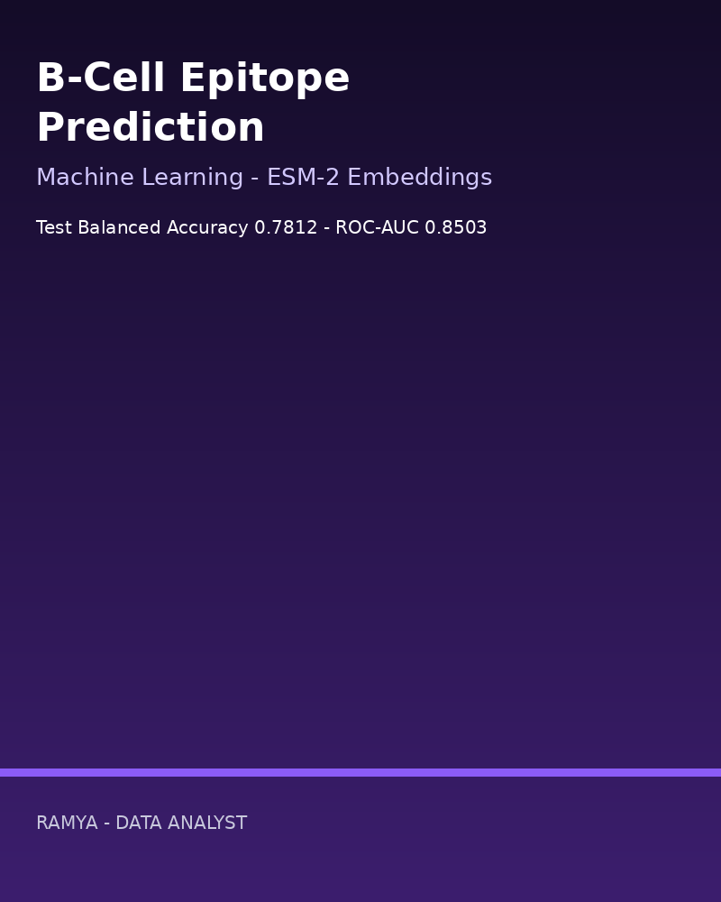

Retail Sales & Segmentation
Data Analytics • SQL • RFM
£360,215 revenue • AOV £240.14A Ramya Original Series
Data Analyst | Data Scientist | ML Engineer
MSc Artificial Intelligence, Aston University. Data Analyst at Capgemini. I turn data into dashboards, pipelines and machine learning models.
Python • SQL • Power BI • Tableau • Machine Learning • PyTorch
Data Analytics • SQL • RFM
£360,215 revenue • AOV £240.14
Data Analytics • Statistics
Email ROI 1.1144 • CTR 17.15%
Data Engineering • ETL
8 DQ checks • £471,555 revenue
ML • Gradient Boosting
Test ROC-AUC 0.8122
Computer Vision • PyTorch
Dissertation: 41.8% mIoU • 53.3% Dice
ML • Collaborative Filtering
Precision@3 0.4503
ML • Data Mining • ESM-2
Balanced Accuracy 0.7812 • ROC-AUC 0.8503
SQL • Pandas • RFM
1,500 orders • 299 customers
Channel ROI • Chi-square test
A/B p = 0.4429, not significant
ETL • SQLite warehouse
2,000 rows • 8 checks passed
Analytics + ML • Retention
4,500 customers • CV ROC-AUC 0.7822
PyTorch • U-Net family
MSc dissertation • DeepParticle 7,000+ESM-2 embeddings • Data Mining
~50,000 rows • ROC-AUC 0.8503
Collaborative Filtering • FP-Growth
Precision@3 0.4503 • 400 users
Gradient Boosting • Scikit-learn
Test ROC-AUC 0.8122MSc Artificial Intelligence graduate (Aston University, 2025–2026) with hands-on experience in Machine Learning, Deep Learning, Computer Vision, Data Analytics and AI-driven problem solving.
Data Analyst at Capgemini, Bangalore (May 2024 – Apr 2025): Python, SQL and Excel analysis, Tableau and Power BI dashboards, data cleaning and validation, EDA and feature engineering, automated reporting, and cloud data migration support.
B.Tech in Electrical and Electronics Engineering, Dayananda Sagar Academy of Technology and Management (2019–2023, CGPA 7.49/10). Based in the United Kingdom.
May 2024 – Apr 2025
Analysed large datasets with Python, SQL and Excel, built Tableau and Power BI dashboards, cleaned and validated data, automated reporting and supported cloud data migration.
2025 – 2026
Dissertation: Plastic Detection and Classification by Image Segmentation, 41.8% mIoU and 53.3% Dice on the DeepParticle dataset.
2019 – 2023 • CGPA 7.49/10
Open to Data Analyst, Data Scientist, AI Engineer and Machine Learning Engineer roles in the UK.
Email: ramyakrishnaparimi@gmail.com
Data Analytics • SQL • Python
End-to-end retail analytics: sales performance by category, product and month, plus RFM customer segmentation (Champions, Loyal, Regular, At Risk) built with SQL queries and a runnable Python analysis.
Data: synthetic retail data, generated and labelled as synthetic in the repository.
Data Analytics • Statistics
Campaign performance analytics across channels with ROI, click-through and conversion analysis, and a properly run A/B test using a chi-square test, reported honestly even when the result is not significant.
Data: synthetic campaign data, generated and labelled as synthetic in the repository.
Data Analytics • Data Engineering • Software
An automated ETL and reporting pipeline in the style of real Capgemini dashboard work: ingest, run data-quality checks, quarantine bad rows, load a SQLite warehouse and generate a KPI report automatically.
Data: synthetic operations data, generated and labelled as synthetic in the repository.
Machine Learning • Data Analytics
Churn modelling with exploratory analysis, a gradient boosting classifier, cross-validation, feature importance and retention segment analysis, so the output is a retention playbook, not just a score.
Data: synthetic customer data, generated and labelled as synthetic in the repository.
AI • Computer Vision • MSc Dissertation
Ramya's real MSc dissertation at Aston University: a deep learning image segmentation system for microplastic detection from microscope images, comparing U-Net, U-Net++, DeepLabV3+ and FPN with ResNet-50, Dice-Focal loss and test-time augmentation. The repository contains her full original dissertation notebook with outputs, under an MIT licence.
Real work: her MSc dissertation (Jan–Apr 2026), results from her own notebook. A separate synthetic metrics demo in the repo is labelled as a demo.
Machine Learning • Software
A recommendation engine combining user/item collaborative filtering with FP-Growth style association rules, exposed through a clean recommender class with an API-style example and a hold-out evaluation.
Data: synthetic transaction data, generated and labelled as synthetic in the repository.
Machine Learning • Data Mining • Bioinformatics
Ramya's CS4850 Data Mining coursework at Aston University: predicting linear B-cell epitopes in protein sequences using ESM-2 protein embeddings plus bioinformatics features, with group-aware cross-validation to avoid data leakage and a tuned logistic regression final model. The repository contains her full original notebook with outputs, under an MIT licence.
Real work: her Aston coursework notebook, results taken from its own outputs.